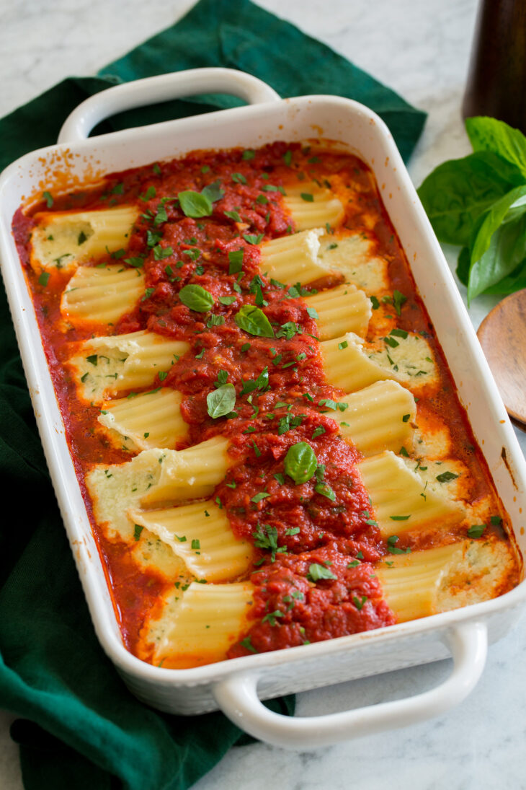

Stuffed Manicotti

Description
Large tube pasta are boiled until al dente then a filling of ricotta, mozzarella and sometimes spinach is stuffed inside. The filled manicotti shells are layered into a baking dish and covered with marinara sauce. Sometimes you’ll see them finished with more cheese over the top... This mostly from scratch dish is total comfort food! Try them and you’ll see why, so much cheesy, tomatoey deliciousness in every bite!
Ingredients
- Dry manicotti noodles
- Ricotta, mozzerella, parmesan cheese
- Eggs
- Fresh parsley and basil
- Salt and pepper
- Canned crushed tomatoes
- Garlic
- EVOO
Steps
- Heat EVOO in skillet over medium heat, add garlic and saute
- Stir in crushed tomatoes and basil, let simmer while preparing pasta and filling
- Preheat oven to 350, cook pasta and drain
- Fork blend together the ricotta, eggs, parsley, salt and pepper
- Stir in grated mozzerella and parmesan until well blended
- Pipe in or stuff by hand cheese mixture into noodles
- Spread 1 1/2 cups sauce in bottom of baking dish
- Align manicotti in single layer, cover with sauce, and add remaining manicotti in second layer over top
- Cover manicotti with remaining sauce, cover with foil, and bake 40 minutes or until cheese has melted thru to the center
- Voila! Bon Appetit!